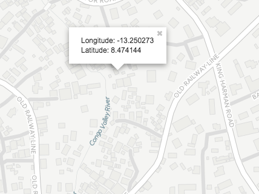

13.15. Get the latitude and longitude at any location
Prev
Chapter 13. Using the GIS app
Next
13.15. Get the latitude and longitude at any location
Right-click a map and select
Show longitude/latitude
. The values display in a pop-up window.
